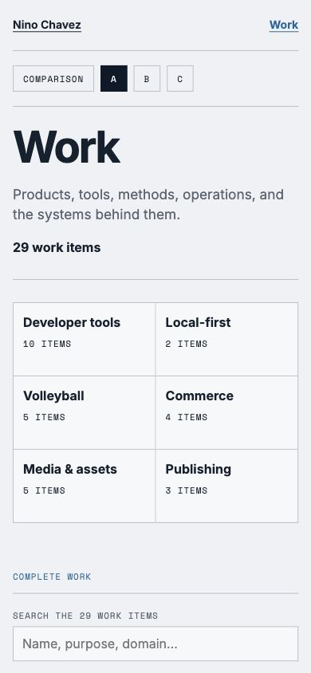
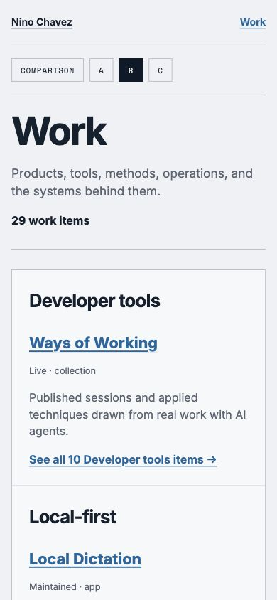
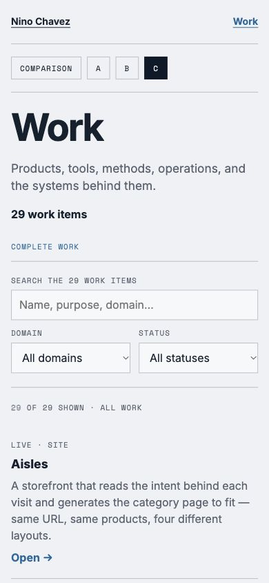

All three were rejected
Work's useful job is showing the complete collection, including what Home leaves out. That supports an archive; it does not establish that visitors need it as a primary entrance. The current recommendation is to retain the archive and individual project pages, while Home and referrals lead straight to relevant examples. Its prominence is still undecided.
These rejected comparisons are preserved below. None was selected or implemented.


